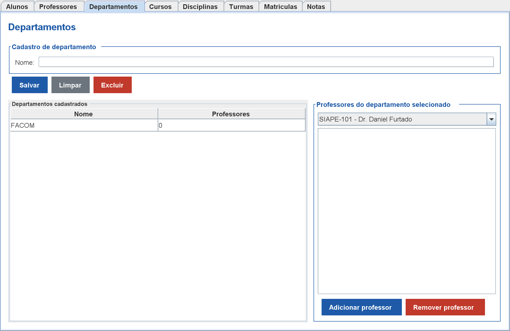
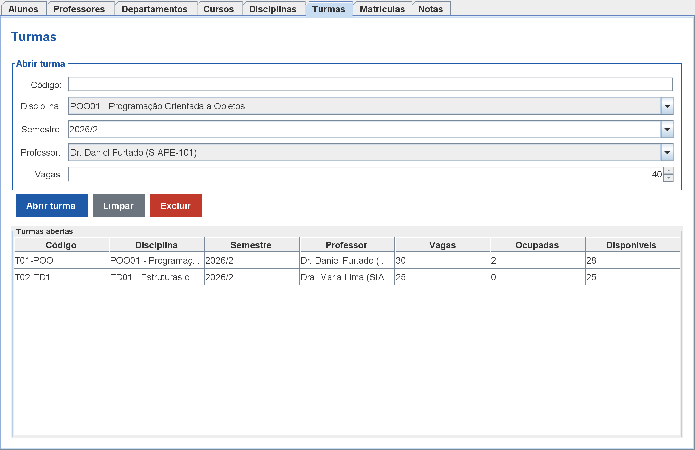
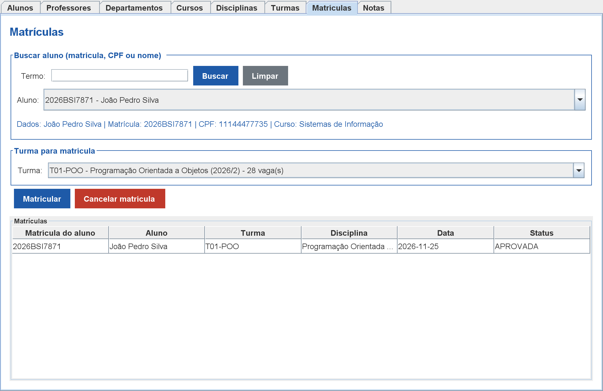

Figura 1 – Diagrama de classes do domínio do sistema (notação UML)

Fonte: elaborado pelos autores (2026).
UNIVERSIDADE FEDERAL DE UBERLÂNDIA (UFU)
FACULDADE DE COMPUTAÇÃO (FACOM)
BACHARELADO EM SISTEMAS DE INFORMAÇÃO
CARLOS CABRAL DE MENEZES FILHO - 12511BSI248
FRED FERREIRA CASTRO - 12511BSI262
ISAC ALVES - 12421BSI407
JOÃO PEDRO CARDOSO DE OLIVEIRA - 12521BSI228
LAURA GRAZIELLE CASTRO NASCIMENTO - 12511BSI247
LETHICIA FERREIRA DE ALMEIDA - 12511BSI209
LETÍCIA MOURA LEMOS - 12511BSI215
LUCIANA FERREIRA DOS SANTOS - 12511BSI235
LUIZ EDUARDO ROSA SONODA - 12511BSI272
Projeto Final de Programação Orientada a Objetos em Java com Interface Gráfica Swing
UBERLÂNDIA
2026
CARLOS CABRAL DE MENEZES FILHO - 12511BSI248
FRED FERREIRA CASTRO - 12511BSI262
ISAC ALVES - 12421BSI407
JOÃO PEDRO CARDOSO DE OLIVEIRA - 12521BSI228
LAURA GRAZIELLE CASTRO NASCIMENTO - 12511BSI247
LETHICIA FERREIRA DE ALMEIDA - 12511BSI209
LETÍCIA MOURA LEMOS - 12511BSI215
LUCIANA FERREIRA DOS SANTOS - 12511BSI235
LUIZ EDUARDO ROSA SONODA - 12511BSI272
Projeto Final de Programação Orientada a Objetos em Java com Interface Gráfica Swing
Relatório técnico apresentado à disciplina de Programação Orientada a Objetos do curso de Bacharelado em Sistemas de Informação da Universidade Federal de Uberlândia, como requisito parcial para aprovação.
Professor: Roberto Júnio Silva Caetano
UBERLÂNDIA
2026
Este relatório documenta o desenvolvimento do Sistema de Gestão de Universidade,
uma aplicação desktop desenvolvida integralmente em Java 17 com interface gráfica em
javax.swing e persistência de dados por serialização binária nativa
(java.io). O sistema permite à Secretaria Acadêmica gerenciar alunos,
professores, departamentos, cursos, disciplinas, turmas, matrículas com controle de vagas e
lançamento de avaliações com cálculo automático de média e situação final. O objetivo do
trabalho foi aplicar, de forma integrada, os conceitos fundamentais da Programação Orientada
a Objetos (POO). O texto detalha a arquitetura organizada em pacotes, os diagramas UML e, com
trechos reais do código-fonte, o emprego de classes e objetos, encapsulamento, herança,
abstração, polimorfismo, interfaces, composição, agregação, enumerações e tratamento de
exceções personalizadas. Além disso, apresenta capturas de tela em alta resolução do sistema
em execução, os testes realizados, o manual completo do usuário e as considerações finais.
Conclui-se que a modelagem orientada a objetos proporcionou modularidade, integridade das
regras de negócio e facilidade de manutenção colaborativa.
Palavras-chave: programação orientada a objetos; Java; gestão universitária; Swing; persistência de dados.
TesteConsole)Turmasuper na classe AlunoPessoa e método abstrato getIdent()Aluno e ProfessorExibivel e implementação em TurmaMatricula e AvaliacaoA Programação Orientada a Objetos (POO) estrutura um software em torno de objetos que reúnem estado (atributos) e comportamento (métodos). O domínio de gestão universitária é particularmente adequado para exercitar esse paradigma, pois seus elementos — pessoas (alunos e professores), departamentos, cursos, disciplinas, turmas, matrículas e avaliações — traduzem-se naturalmente em classes com responsabilidades bem definidas e relacionamentos de herança, agregação e composição.
Este relatório apresenta o projeto Sistema de Gestão de Universidade, desenvolvido em equipe para a disciplina de Programação Orientada a Objetos do curso de Bacharelado em Sistemas de Informação da Universidade Federal de Uberlândia (UFU). O código-fonte completo encontra-se disponível publicamente no GitHub, no endereço https://github.com/ordePJoao/gestao_universidade.
O objetivo geral foi construir um sistema acadêmico desktop completo e funcional que aplicasse os pilares da POO em Java. Os objetivos específicos foram:
javax.swing);O relatório está organizado da seguinte forma: o Capítulo 2 descreve as tecnologias e a arquitetura do sistema; o Capítulo 3 documenta os conceitos de POO aplicados com trechos reais do código; o Capítulo 4 apresenta o sistema em funcionamento com capturas de tela e os testes realizados; o Capítulo 5 traz o manual do usuário; e o Capítulo 6 reúne as considerações finais.
O sistema foi desenvolvido integralmente em plataforma Java (JDK 17), utilizando Maven para gerenciamento de build, Swing para a interface gráfica, serialização nativa para persistência e JUnit 5 para testes automatizados. A Tabela 1 resume as bibliotecas e ferramentas empregadas.
Tabela 1 – Bibliotecas e pacotes Java utilizados no desenvolvimento
| Biblioteca / Ferramenta | Finalidade no Sistema |
|---|---|
javax.swing |
Construção da interface gráfica desktop: janelas (JFrame), abas (JTabbedPane), formulários (JTextField, JComboBox, JSpinner), tabelas (JTable), menus e diálogos (JOptionPane). |
java.awt |
Gerenciadores de layout (BorderLayout, GridBagLayout, FlowLayout), paleta de cores, fontes e tratamento de eventos. |
java.io |
Persistência binária em disco do grafo de objetos a partir da raiz Universidade com Serializable, ObjectOutputStream e ObjectInputStream. |
java.util e java.time |
Coleções (List, ArrayList, Collections, Optional) e datas/horários (LocalDate, LocalTime, Year). |
java.text.Normalizer |
Normalização de strings para busca de alunos sem distinção de acentos ou maiúsculas. |
| Maven, JUnit 5 e Git | Automação de build (pom.xml), testes unitários e controle de versão colaborativo com branches e pull requests. |
Fonte: elaborado pelos autores (2026).
A arquitetura separa as regras de negócio do domínio, o armazenamento em arquivo, o
tratamento de exceções e as telas gráficas. A classe raiz Universidade atua como
ponto central de acesso aos dados, sendo compartilhada entre todas as abas da
TelaPrincipal. O Quadro 1 resume a responsabilidade de cada pacote.
Quadro 1 – Pacotes do sistema e suas responsabilidades
| Pacote | Responsabilidade e principais classes |
|---|---|
br.edu.universidade.model |
Entidades e regras de negócio: Universidade, Pessoa, Aluno, Professor, Departamento, Curso, Disciplina, Turma, Matricula, Avaliacao, StatusMatricula e Exibivel. |
br.edu.universidade.view |
Telas Swing e utilitários visuais: TelaPrincipal, AlunoPanel, ProfessorPanel, DepartamentoPanel, CursoPanel, DisciplinaPanel, TurmaPanel, MatriculaPanel, NotasPanel, BuscaAlunoPanel, Estilo e Componentes. |
br.edu.universidade.exception |
Exceções do domínio: UniversidadeException, TurmaCheiaException, MatriculaDuplicadaException, NotaInvalidaException, CpfInvalidoException e AlunoNaoEncontradoException. |
br.edu.universidade.persistence |
Persistência em arquivo binário: RepositorioArquivo e PersistenciaArquivo (leitura e gravação em data/universidade.dat). |
Fonte: elaborado pelos autores (2026).
A Figura 1 apresenta o diagrama de classes completo do domínio do sistema em notação UML.
Figura 1 – Diagrama de classes do domínio do sistema (notação UML)
Fonte: elaborado pelos autores (2026).
Este capítulo documenta cada conceito de orientação a objetos utilizado no projeto,
acompanhado de trechos reais extraídos do repositório. Em alguns trechos, linhas auxiliares
foram omitidas com // ... para manter o foco no conceito analisado.
Uma classe define o molde de atributos e comportamentos, enquanto o objeto é sua instância
criada em memória com o operador new. O Código 1 ilustra a criação das entidades
principais e o vínculo entre curso, disciplina, professor, aluno e turma.
Código 1 – Criação de objetos no fluxo do sistema (TesteConsole)
1 Universidade u = new Universidade("Universidade Teste");
2 Curso curso = new Curso("BSI", "Sistemas de Informacao", 3000);
3 Disciplina disciplina = new Disciplina("POO01", "Programacao Orientada a Objetos", 60);
4 curso.adicionarDisciplina(disciplina);
5 u.cadastrarCurso(curso);
6
7 Professor professor = new Professor("Maria Lima", "52998224725", "maria@uni.br", "SIAPE1", "Doutor");
8 Aluno joao = new Aluno("Joao Souza", "11144477735", "joao@uni.br", new Date(), curso);
9 u.cadastrarProfessor(professor);
10 u.cadastrarAluno(joao);
11
12 Turma turma = new Turma("T1", disciplina, "2026/2", professor, 30);
13 u.cadastrarTurma(turma);
Fonte: repositório do projeto (2026).
Os atributos das classes são declarados como private ou protected,
exigindo o uso de métodos getters e setters que validam os dados recebidos.
Além disso, a classe Universidade protege suas listas internas retornando visões
somente leitura com Collections.unmodifiableList. O Código 2 demonstra a validação
de vagas na classe Turma.
Código 2 – Encapsulamento e validação na classe Turma
1 public final void setVagas(int vagas) {
2 if (vagas <= 0) {
3 throw new IllegalArgumentException("Quantidade de vagas deve ser maior que zero.");
4 }
5 if (this.matriculas != null && vagas < this.matriculas.size()) {
6 throw new IllegalArgumentException(
7 "Quantidade de vagas não pode ser menor que o total de matrículas ocupadas.");
8 }
9 this.vagas = vagas;
10 }
Fonte: repositório do projeto (2026).
A herança permite reutilizar atributos e comportamentos comuns em uma superclasse. No projeto,
Aluno e Professor herdam de Pessoa via
extends, acionando o construtor da classe mãe com super(...) e
adicionando seus atributos específicos (matricula, curso,
siape e titulacao), conforme o Código 3.
Código 3 – Herança e reaproveitamento com super na classe Aluno
1 public class Aluno extends Pessoa implements Serializable {
2 private static final long serialVersionUID = 1L;
3 private String matricula;
4 private Date dataIngresso;
5 private Curso curso;
6 private List<Matricula> matriculas;
7
8 public Aluno(String nome, String cpf, String email, Date dataIngresso, Curso curso) {
9 super(nome, cpf, email);
10 this.dataIngresso = dataIngresso;
11 this.curso = curso;
12 this.matriculas = new ArrayList<>();
13 }
14 }
Fonte: repositório do projeto (2026).
A classe Pessoa é declarada como abstract, pois no sistema não existe
uma pessoa genérica sem papel acadêmico (apenas alunos ou professores). Ela define o método
abstrato getIdent(), obrigando cada subclasse a implementar sua própria forma de
identificação (Código 4).
Código 4 – Classe abstrata Pessoa e método abstrato getIdent()
1 public abstract class Pessoa implements Serializable, Exibivel {
2 private static final long serialVersionUID = 1L;
3 protected String nome;
4 protected String cpf;
5 protected String email;
6
7 public abstract String getIdent();
8
9 @Override
10 public String exibirDados() {
11 return "Nome: " + nome + " | CPF: " + cpf + " | Email: " + email;
12 }
13 }
Fonte: repositório do projeto (2026).
Em tempo de execução, chamadas a getIdent() ou exibirDados() em uma
referência do tipo Pessoa ou Exibivel executam a implementação
específica do objeto real (Aluno retorna a matrícula; Professor
retorna o SIAPE), como mostra o Código 5.
Código 5 – Polimorfismo de sobrescrita em Aluno e Professor
1 // Em Aluno.java
2 @Override
3 public String getIdent() {
4 return this.matricula;
5 }
6
7 // Em Professor.java
8 @Override
9 public String getIdent() {
10 return this.siape;
11 }
Fonte: repositório do projeto (2026).
A sobrecarga ocorre quando métodos ou construtores possuem o mesmo nome e assinaturas
distintas. A classe Aluno oferece dois construtores (um recebendo matrícula
explícita e outro recebendo Curso para geração automática do código); da mesma
forma, TurmaCheiaException e RepositorioArquivo.salvar possuem
sobrecargas para diferentes parâmetros.
A interface Exibivel estabelece o contrato exibirDados(),
implementado por Pessoa, Curso, Disciplina e
Turma (Código 6). Na camada visual, a interface Atualizavel define o
método atualizar(), permitindo que a TelaPrincipal atualize qualquer
aba selecionada polimorficamente ao trocar de guia.
Código 6 – Interface Exibivel e implementação em Turma
1 // Exibivel.java
2 public interface Exibivel {
3 String exibirDados();
4 }
5
6 // Turma.java
7 public class Turma implements Serializable, Exibivel {
8 // ...
9 @Override
10 public String exibirDados() {
11 return codigo + " - " + disciplina.getNome() + " (" + semestre + ")";
12 }
13 }
Fonte: repositório do projeto (2026).
A agregação é aplicada em Universidade, que agrupa alunos,
professores, cursos, disciplinas, turmas e departamentos que podem existir de maneira
independente. Já a composição ocorre entre Matricula e
Avaliacao: a matrícula cria e gerencia internamente suas avaliações (Código 7),
e o encerramento/exclusão da matrícula elimina o vínculo dessas avaliações.
Código 7 – Composição entre Matricula e Avaliacao
1 public class Matricula implements Serializable {
2 private final Aluno aluno;
3 private final Turma turma;
4 private final List<Avaliacao> avaliacoes = new ArrayList<>();
5
6 public void adicionarAvaliacao(String tipo, double nota) throws NotaInvalidaException {
7 avaliacoes.add(new Avaliacao(tipo, nota));
8 }
9
10 public double calcularMedia() {
11 return avaliacoes.stream()
12 .mapToDouble(Avaliacao::getNota)
13 .average()
14 .orElse(0.0);
15 }
16 }
Fonte: repositório do projeto (2026).
O tipo enumerado StatusMatricula representa os estados válidos de uma matrícula
(ATIVA, APROVADA, REPROVADA e CANCELADA),
evitando o uso de literais soltos e garantindo segurança de tipos no domínio e na tela de notas.
As regras inválidas são sinalizadas por exceções verificadas derivadas de
UniversidadeException: TurmaCheiaException,
MatriculaDuplicadaException, NotaInvalidaException,
CpfInvalidoException e AlunoNaoEncontradoException. Na interface
gráfica, Componentes.mostrarErro intercepta essas exceções e apresenta diálogos
claros em JOptionPane (Código 8), sem expor rastros de pilha ao usuário.
Código 8 – Definição de exceção personalizada e captura na interface gráfica
1 // NotaInvalidaException.java
2 public class NotaInvalidaException extends UniversidadeException {
3 private static final long serialVersionUID = 1L;
4 public NotaInvalidaException(double notaInformada) {
5 super("Nota inválida: " + notaInformada + ". A nota deve estar entre 0 e 10.");
6 }
7 }
8
9 // Componentes.java
10 public static void mostrarErro(Component pai, Exception ex) {
11 String titulo = ex instanceof UniversidadeException || ex instanceof IllegalArgumentException
12 ? "Dados inválidos" : "Erro";
13 JOptionPane.showMessageDialog(pai, ex.getMessage(), titulo, JOptionPane.ERROR_MESSAGE);
14 }
Fonte: repositório do projeto (2026).
A classe RepositorioArquivo utiliza blocos try-with-resources com
ObjectOutputStream e ObjectInputStream para salvar e restaurar o
objeto raiz Universidade em data/universidade.dat, persistindo em
cascata todas as listas e entidades que implementam Serializable.
O Quadro 2 sintetiza todos os conceitos de POO exigidos e onde cada um foi aplicado no código.
Quadro 2 – Síntese dos conceitos de POO e onde são aplicados
| Conceito | Onde aparece no código |
|---|---|
| Classes e objetos | Todas as entidades do pacote model; instanciação via new nos painéis e testes. |
| Encapsulamento | Atributos private/protected com validação em setters (Turma.setVagas) e listas imutáveis em Universidade. |
| Herança | Pessoa → Aluno e Professor; painéis Swing que estendem JPanel e TelaPrincipal (JFrame). |
| Abstração | Classe abstrata Pessoa com método abstrato getIdent(). |
| Polimorfismo (sobrescrita) | getIdent() e exibirDados() em Aluno/Professor; atualizar() nas abas. |
| Polimorfismo (sobrecarga) | Construtores de Aluno e TurmaCheiaException; métodos salvar/carregar de RepositorioArquivo. |
| Interfaces | Exibivel (domínio), Atualizavel (interface gráfica) e Serializable (persistência). |
| Composição e agregação | Matricula compondo Avaliacao; Universidade agregando alunos, professores, cursos, disciplinas, turmas e departamentos. |
| Enumerações | StatusMatricula (ATIVA, APROVADA, REPROVADA, CANCELADA). |
| Exceções personalizadas | UniversidadeException e 5 subclasses tratadas com JOptionPane em Componentes. |
Fonte: elaborado pelos autores (2026).
As capturas de tela a seguir foram obtidas executando o sistema compilado a partir do repositório em Java, em resolução ampliada (2160×1400 pixels) para preservar a nitidez de todos os componentes da interface Swing.
Permite buscar, cadastrar, editar e excluir alunos (Figura 2), com geração automática do código de matrícula conforme o ano letivo e o código do curso escolhido.
Figura 2 – Tela de cadastro, busca e listagem de Alunos

Fonte: elaborado pelos autores (2026).
Gerencia os docentes da instituição (Figura 3), registrando SIAPE, nome, CPF, e-mail e titulação acadêmica.
Figura 3 – Tela de cadastro e listagem de Professores

Fonte: elaborado pelos autores (2026).
Possibilita criar departamentos acadêmicos e vincular ou remover professores associados a cada unidade (Figura 4).
Figura 4 – Tela de gerenciamento de Departamentos

Fonte: elaborado pelos autores (2026).
Mantém o cadastro de cursos e permite associar as disciplinas que compõem sua grade curricular (Figura 5).
Figura 5 – Tela de cadastro e listagem de Cursos

Fonte: elaborado pelos autores (2026).
Registra as disciplinas ofertadas pela universidade com código, nome e carga horária, exibindo o vínculo com cursos e turmas (Figura 6).
Figura 6 – Tela de cadastro e listagem de Disciplinas

Fonte: elaborado pelos autores (2026).
Permite abrir turmas associando disciplina, semestre, professor e limite de vagas, com acompanhamento em tempo real das vagas ocupadas e disponíveis (Figura 7).
Figura 7 – Tela de abertura e controle de vagas de Turmas

Fonte: elaborado pelos autores (2026).
Utiliza o componente BuscaAlunoPanel para localizar o aluno por matrícula, CPF ou
nome e conferir seus dados antes de escolher a turma com vagas disponíveis (Figura 8).
Bloqueia matrículas duplicadas e turmas lotadas com mensagens em JOptionPane.
Figura 8 – Aba Matrículas com busca de aluno e controle de vagas

Fonte: elaborado pelos autores (2026).
Após buscar o aluno, exibe exclusivamente as turmas em que ele está matriculado, permitindo lançar ou alterar notas de 0 a 10 e exibindo automaticamente a média simples e a situação (APROVADA em verde para média maior ou igual a 7,0; REPROVADA em vermelho abaixo de 7,0), conforme ilustrado na Figura 9.
Figura 9 – Aba Notas com busca de aluno, cálculo de média e situação

Fonte: elaborado pelos autores (2026).
O sistema conta com suíte de testes unitários em JUnit 5 no diretório
src/test/java/br/edu/universidade/ (DepartamentoTest,
ExcecaoTest, PersistenciaTest,
TratamentoExcecoesInterfaceTest, UniversidadeDepartamentoTest, entre
outros) e teste integrado em console (TesteConsole). Foram verificados:
MatriculaDuplicadaException) e de turma lotada (TurmaCheiaException);NotaInvalidaException) e cálculo correto da média;data/universidade.dat.Para baixar, compilar e executar o sistema via terminal:
git clone https://github.com/ordePJoao/gestao_universidade.git cd gestao_universidade mvn clean package java -jar target/gestao-universidade-1.0.jar
Alternativamente, o projeto pode ser importado como projeto Maven em uma IDE (IntelliJ IDEA,
Eclipse ou VS Code), executando diretamente a classe br.edu.universidade.Main.
Ao iniciar, a aplicação lê automaticamente o arquivo data/universidade.dat (ou
inicia vazia caso ainda não exista). Durante a utilização, o operador pode salvar a qualquer
momento pelo menu Arquivo → Salvar (atalho Ctrl+S) ou pelo botão
Salvar na barra inferior. Ao fechar a janela, uma caixa de confirmação
pergunta se as alterações devem ser gravadas antes de encerrar.
Link oficial do projeto completo no GitHub: https://github.com/ordePJoao/gestao_universidade
O desenvolvimento do Sistema de Gestão de Universidade atingiu todos os objetivos propostos,
permitindo aplicar de maneira prática e integrada os conceitos centrais da Programação
Orientada a Objetos em Java. A modelagem com herança (Pessoa,
Aluno e Professor), interfaces (Exibivel e
Atualizavel), composição (Matricula e Avaliacao),
enumerações e exceções personalizadas resultou em um código organizado, extensível e alinhado
aos diagramas UML.
A divisão em pacotes e o uso de branches e pull requests no GitHub viabilizaram o trabalho colaborativo da equipe sem perda de integridade. Como trabalhos futuros, o sistema pode ser expandido com persistência em banco de dados relacional via JDBC, geração de históricos escolares em PDF e controle de autenticação por perfis distintos (Secretaria, Professores e Alunos).
ASSOCIAÇÃO BRASILEIRA DE NORMAS TÉCNICAS. NBR 6023: informação e documentação: referências: elaboração. Rio de Janeiro: ABNT, 2018.
ASSOCIAÇÃO BRASILEIRA DE NORMAS TÉCNICAS. NBR 14724: informação e documentação: trabalhos acadêmicos: apresentação. Rio de Janeiro: ABNT, 2011.
DEITEL, Paul; DEITEL, Harvey. Java: como programar. 10. ed. São Paulo: Pearson Education do Brasil, 2016.
GAMMA, Erich et al. Padrões de projeto: soluções reutilizáveis de software orientado a objetos. Porto Alegre: Bookman, 2000.
ORACLE CORPORATION. Java Platform, Standard Edition Documentation: Packages javax.swing, java.awt and java.io. Disponível em: https://docs.oracle.com/en/java/. Acesso em: 25 nov. 2026.
OLIVEIRA, João Pedro Cardoso de et al. gestao_universidade: Sistema de Gestão de Universidade em Java Swing. [S. l.]: GitHub, 2026. Repositório de código-fonte. Disponível em: https://github.com/ordePJoao/gestao_universidade. Acesso em: 25 nov. 2026.